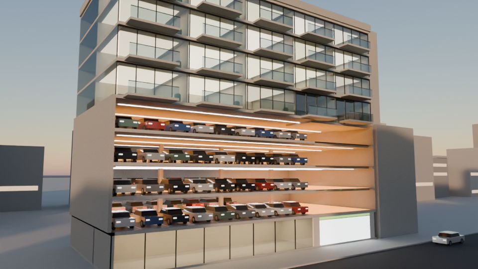

Parkstory › Guides
Automated parking compared: TilePark, AGV robots, shuttles and tower systems
Automated parking systems differ most in how cars move across a floor and between floors. That decides how much floor is parking and what happens when one machine stops.
AGV robots and rail-guided shuttles need drive aisles or rails, and tower systems move every car through a central lift. The TilePark XY grid needs neither aisles nor rails: every position is a conveyor, so the whole floor is parking, and cars are routed around a stopped conveyor. Between levels, every automated system relies on lifts, stackers or a central lift, so their number and redundancy decide how a failure affects the garage.

The architectures side by side
| System | How cars move | Floor used for movement | When one machine stops | Layout |
|---|---|---|---|---|
| Conventional garage | Drivers drive and walk | Ramps and drive aisles, about half of each parking floor | Not applicable | Fixed by ramps |
| AGV robots | Robots carry cars along drive aisles | At least one drive aisle | A stopped robot can block the shared aisle | Fixed by the aisles |
| Rail-guided shuttles | Shuttles on rails, lifts between levels | Rails, aisles and lifts | A shuttle or lift failure can block an aisle or a level | Fixed by the rails |
| Tower systems | A central lift serves shelves around it | The central lift shaft | A lift failure stops every car it serves | Fixed by the tower |
| TilePark | Conveyors move cars in X and Y; car elevators between levels | No drive aisles or rails | Cars are routed around a stopped conveyor; a stopped elevator affects the levels it serves | Follows the site and the column grid |
| TilePark Automated Stackers | Conveyor grid on one level, a stacker above each selected conveyor | No drive aisles or rails | A stopped stacker affects only the cars it holds | Follows the site; uses clear height |
| TilePark Tower | A central lift; TilePark conveyors on every level | The central lift shaft | A stopped central lift pauses retrieval until it is repaired; on each level, conveyors route around a stopped one | From 2 to 24 cars per level, up to 13 levels |
General descriptions of system types, not of individual products. Every project differs, which is why we compare layouts on your actual site.
Floor area
Because TilePark needs no drive aisles or rails, more of each floor is parking. How many more spaces fit than with an aisle-based system depends on the site; Parkstory layout studies on identical footprints are the basis, and your free feasibility study shows the figure for your site.
Questions to ask every supplier
- If one machine stops, which cars can still be retrieved, and which wait for the repair?
- Which machines does every car pass through: lifts, shuttles, robots or transfer cabins? How many of each are there?
- How much floor is used for aisles, rails or lifts?
- Who builds the machines, and who will service them in 20 years? For how long are spare parts guaranteed?
- Will the supplier commit to retrieval times, throughput and availability in the contract?
- Can the layout follow your columns and the shape of your site?
Questions on this topic
Is TilePark an AGV system?
No. AGV robots drive under cars and carry them along aisles. In TilePark the floor itself moves the cars: each position is a conveyor that passes the pallet with the car to the next position.
Does TilePark need lifts?
To move between levels, yes: car elevators in TilePark, stackers in TilePark Automated Stackers and a central lift in TilePark Tower. On each level, cars move on conveyors only.
Which system fits the most cars on a footprint?
That depends on the site. Systems that need no drive aisles or rails use more of each floor for parking; your feasibility study compares the layouts for your site.
Get the figures for your site
Send us your site or floor plan. Our engineers lay out TilePark on your site free of charge.
Request a free feasibility study →